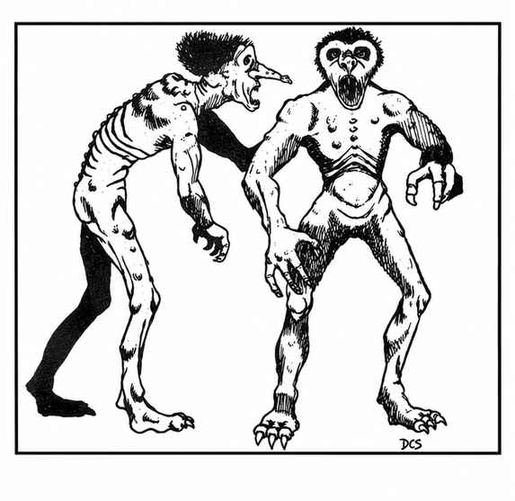
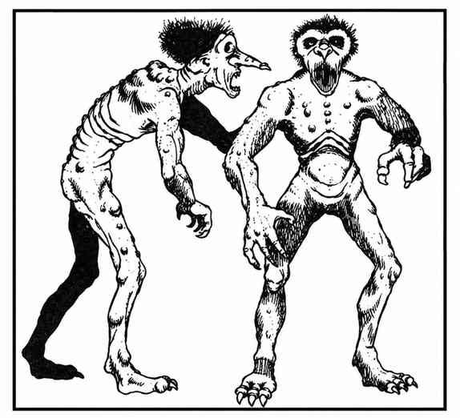

巨魔 · Troll

 |
|
巨魔是几乎遍布各地的可怕食肉动物，无所畏惧且不停攻击，大多数生物都害怕它们。巨魔嗅觉敏锐，红外视觉优秀，力量极强。它们用带爪前肢和巨齿攻击，可以同时与 3 名不同对手战斗。
受伤 3 个战斗轮后，巨魔开始再生，每轮恢复 3 点生命值，断肢也会重新接合。即使与身体分离，巨魔的肢体仍能战斗：手能抓挠或勒杀，头能咬噬等。彻底肢解也不能杀死巨魔，因为各部分会爬行聚拢并重新接合，3–18 个战斗轮后恢复完整并继续战斗。必须将巨魔烧毁或浸入酸液才能杀死它；分离的部分也必须同样处理，否则会重新聚合。巨魔皮肤为令人作呕的苔藓绿、斑驳绿灰或腐败灰，头上有绿色黑色或铁灰色的蠕动毛发，双眼暗黑。